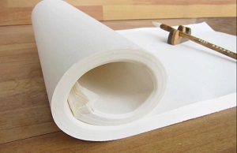

The paper
To practice calligraphy people use a relatively coarse paper called Maobianzhi. It is made with grass. It is a yellowish colour. Its low cost makes us able to practice a lot without spend to much money.
To write it as an art from, the same paper used for Chinese painting is used: Xuan Zhi (宣纸) made from grass. The absorbent type, Sheng Xuan (生宣) ， is the common one.